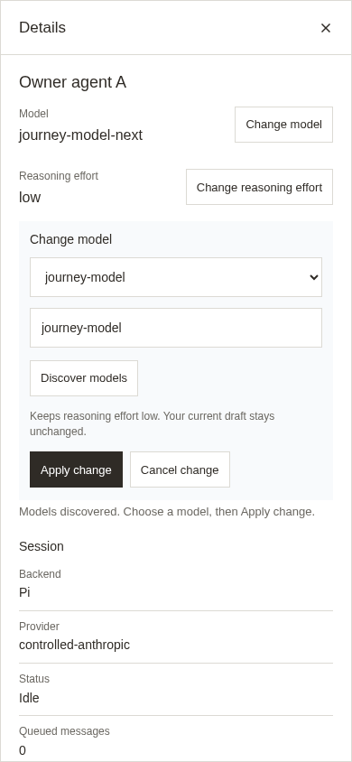
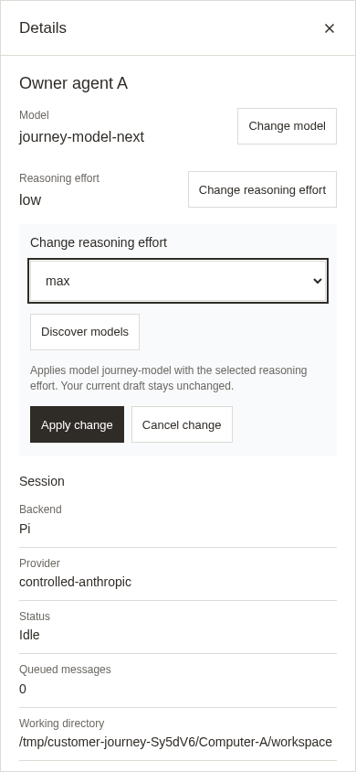
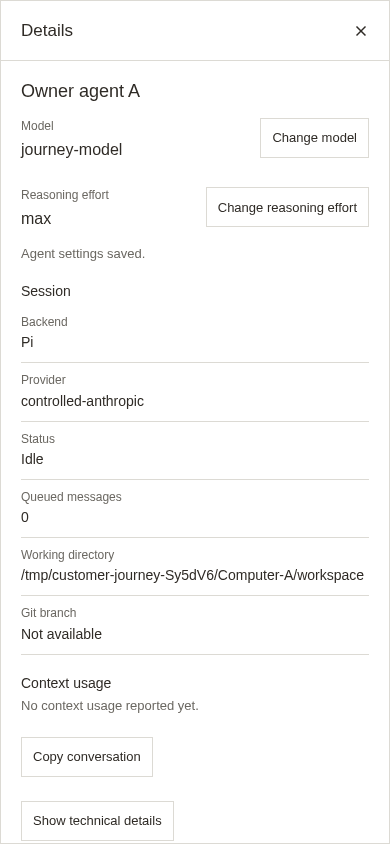
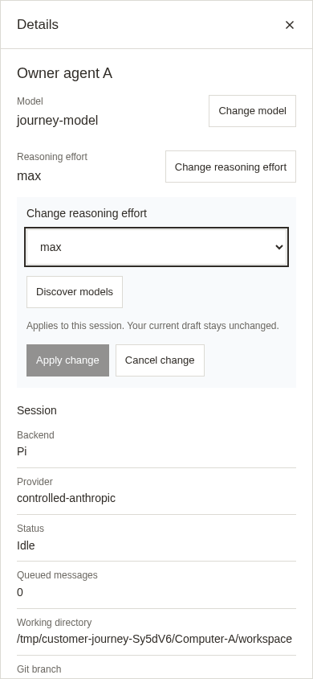
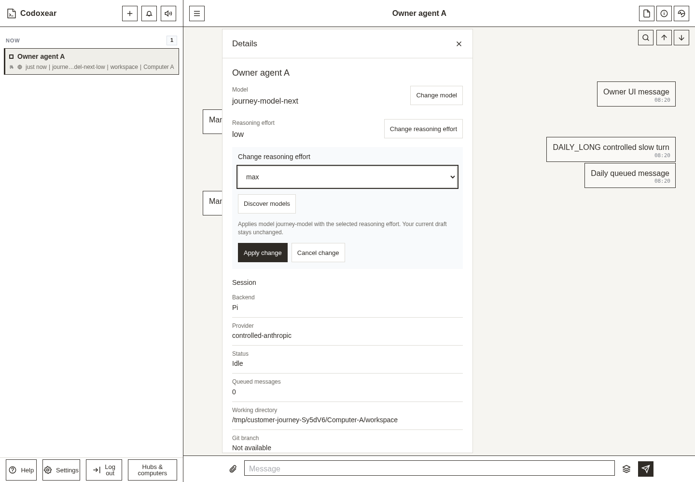
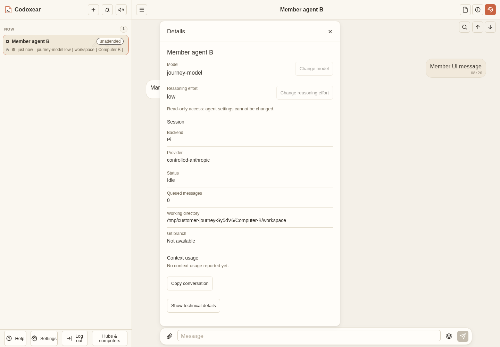
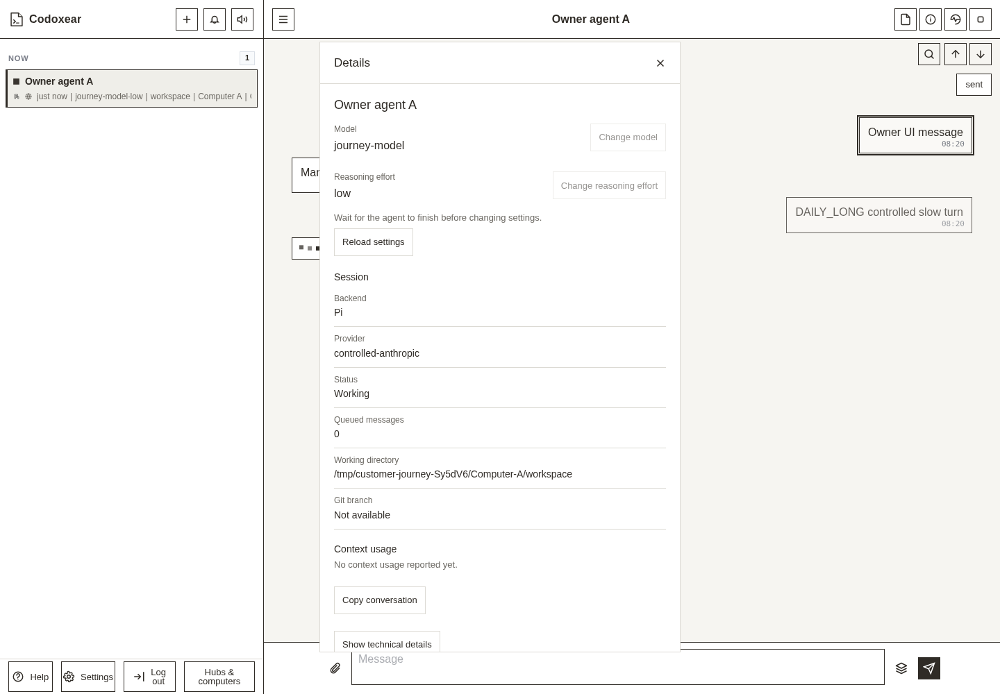

Web Details follows the existing HarmonyOS component: compact single-line Change controls, one-setting editor, stacked Session/Context rows, Copy conversation and Show/Hide technical details. Captured from the deployed frontend; OAuth and model responses are controlled fixtures.






